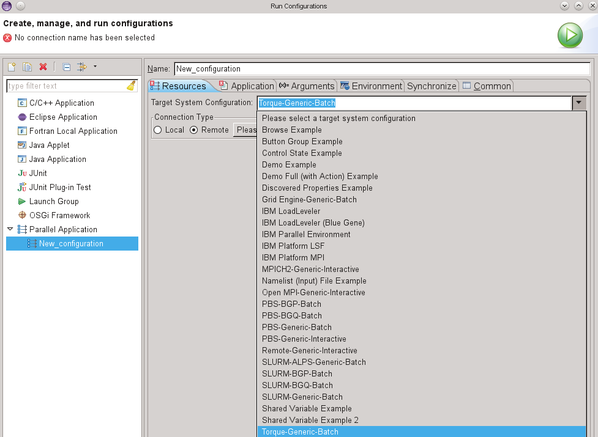
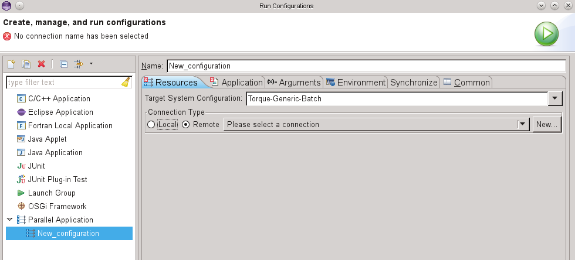
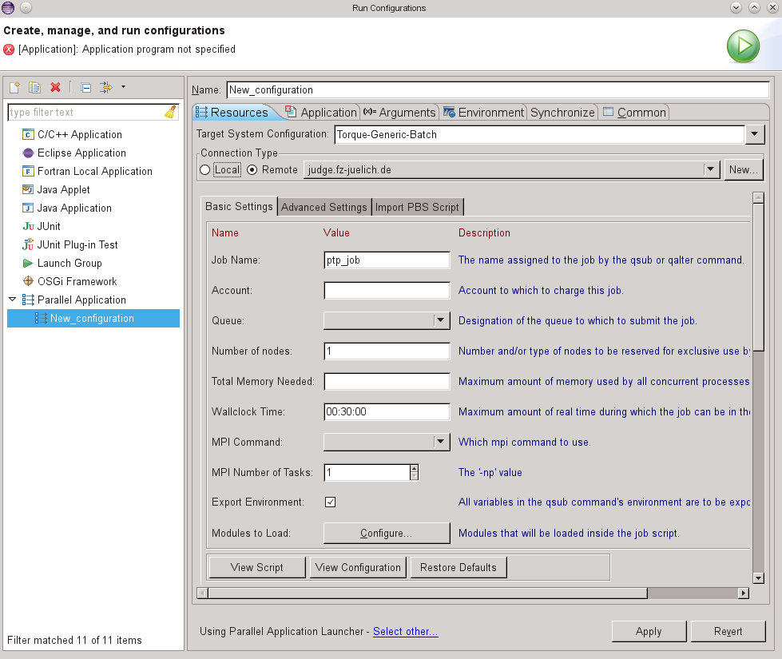

This section describes how to set up a run configuration using TORQUE as a PTP target system configuration
When running a TORQUE program from PTP, first create a C/C++/Fortran project, and build it. For more information, see
As described in Running Parallel Programs, next create a run configuration via Run > Run Configurations ... and create a new Parallel Application.
The specifics for running a TORQUE program with PTP are specified on the Resources tab of the run configuration. For Target System Configuration, select Torque-Generic-Batch

Then specify a connection. If you have already specified a connection, e.g. for a Synchronized Project or a remote project, it will be selected already. If you are launching a local application (on the same machine where Eclipse is running), select Local for the Connection Type.

See Creating Remote Connections and Local Connections
Note: To edit connection information after a connection has been created, e.g. to change user name or password, see Editing Remote Connections.
Fill in the TORQUE options, as appropriate for your system, in the Basic/Advanced Settings tab.

For an example of using Torque PBS when launching a PTP job, see the PTP SC12 tutorial slides
Now continue with the run configuration setup for running your parallel application by specifying the Application program on the Application tab, and any other information required.